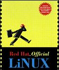

Linux Journal Readers pick their favorite hardware and software.
Welcome to Linux Journal's second annual Readers' Choice Awards.
In response to requests for more choices, last year's three categories have been expanded to ten. We've added several categories, including the hotly contested “Favorite CD-ROM Distribution”.
Our survey was conducted through the Linux Journal web site, where the voting was open for two weeks. The survey, though unscientific, gives us an idea of what our readers are using, what they like and what they'd like to see more of in Linux Journal.
Now, the results...
Favorite CD-ROM Distribution
Winner: Official Red Hat Linux
“Red Hat is second to none in tech support. I can usually expect e-mail response to a question within five minutes. Try getting that level of service from Microsoft for free!” --Chuck Milam
—Chuck Milam
Runner-up: Debian Linux
Favorite Text Editor
Winner: Emacs
Runner-up: vi/elvis
Favorite Word Processor or Text Processor
Winner: WordPerfect 6.0 for Linux
“Caldera has the RIGHT stuff.” --Ric Moore
—Ric Moore
Runner-up: groff
Favorite Game
Winner: DOOM
“Are there any real games for Linux apart from DOOM?” --Sharon
—Sharon
Runner-up: Quake
Favorite Development Tool
Winner: gcc
“For me it is difficult to decide if I prefer gcc or Perl5.”
—Jan “Yenya” Kasprzak
Runner-up: G++
Favorite Serial Interface Board
Winner: Cyclades
Runner-up: Comtrol Rocketport
Favorite Platform
Winner: Intel
“I selected Intel as my favourite platform...Alpha and PPC chips have taken far too long to come out on inexpensive, reliable clone motherboards rather than expensive name brand stuff. I can't wait for the day when superior chips are as inexpensively ubiquitous as the x86 chips.”
—Craig Sanders
Runner-up: Alpha
Favorite New Linux Book
Winner: Linux System Administration Guide by Lars Wirzenius Available at sunsite.uc.edu/mdw/linux.html#ldp
Runner-up: Inside Linux by Randolph Bentson Published by SSC
Favorite Overall Linux Book
Winner: Linux Network Administrators Guide by Olaf Kirch Published by SSC Runner-up: Running Linux by Matt Welsh and Lar Kaufman Published by O'Reilly & Associates, Inc
More information about the products included in this article (or other Linux hardware and software) is available through www.ssc.com/linux/.